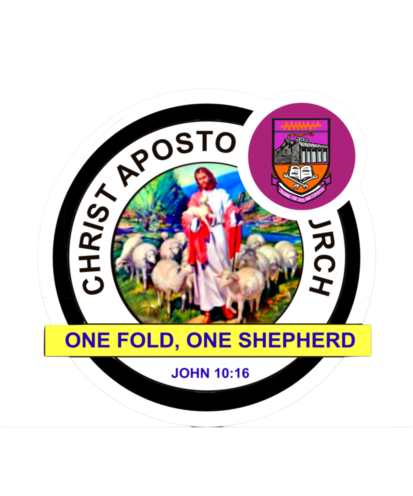

ADMIN DASHBOARD
Applicants overview.
Review, search and export volunteer applications.
Admin access
Sign in with an authorised Supabase admin account.

CACSF MEDIA ADMIN← ApplicationReview, search and export volunteer applications.
Sign in with an authorised Supabase admin account.